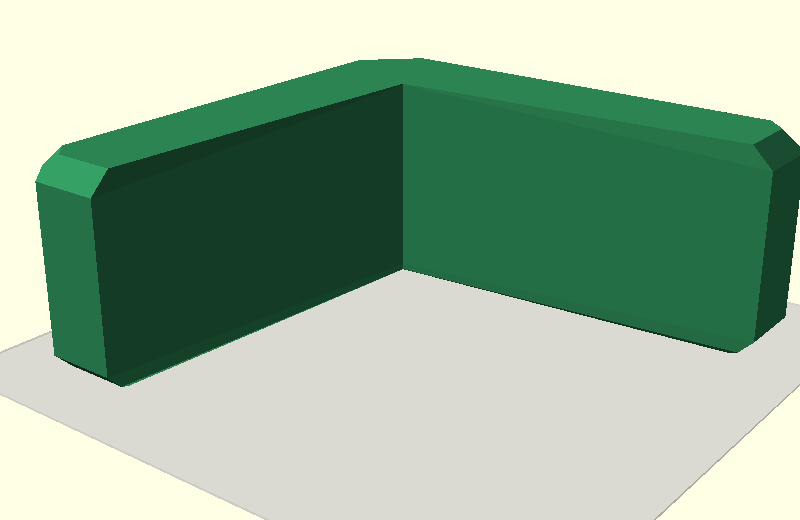
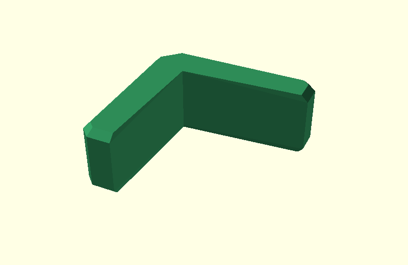

Corner Bracket: same construction as the beam
This walkthrough now checks the two ef inputs separately first.
That is deliberate: before looking at hull(), the lower input must clearly
be a flat L-shaped plate, just like the plate under the beam.
The clean starting L contains c, ce and cs, but no ef.
0. Clean L with cs

No elephant-foot geometry is present yet.
1. Lower ef input only

This image shows nothing except the lower input.
The construction is now literally the same as in the beam demo:
- put the complete already-
cs-chamfered L in print orientation; - take a thin slab exactly at print-bed
Z=0; - project that slab to obtain the real bottom footprint;
- apply
offset(-ef); - extrude that result as the lower plate.
So this plate is no longer an X/Z section that is rotated afterward. It is derived directly from the final print-oriented 3D L, which fixes both its orientation and its position.
2. Upper ef input only

This is the complete already-cs-chamfered L from height ef upward.
3. Both inputs, exploded

Now the same two inputs are shown together:
- blue lower L plate;
- orange upper L volume.
They are moved apart only for this illustration.
4. Hull result

Because a global hull would fill the concave inside corner, the two arms are hulled separately internally and then united.
5. Resulting L

This is the resulting one-sided elephant-foot experiment.
Interactive source
Open
design/ef_cs_junction_explained.scad
and use the junction_step dropdown.